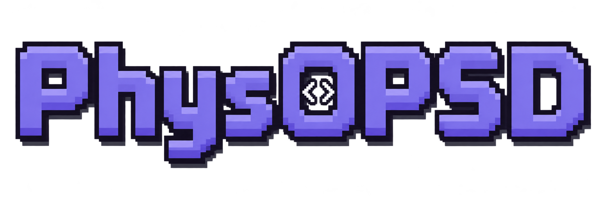
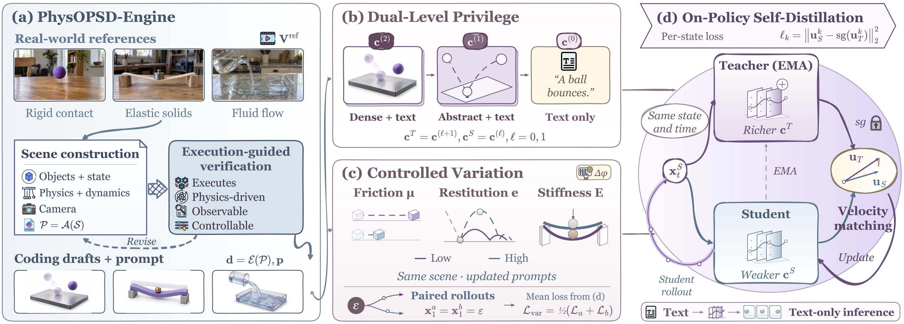

Executable physical context
PhysOPSD-Engine translates reference scenarios into verifiable scene programs and renders physical drafts.

Code as Privilege for
Physically Plausible
Video Generation
Executable physical context for on-policy self-distillation.
Code as privileged physical context. PhysOPSD uses executable simulations to strengthen a video model's own predictions during on-policy self-distillation. The model internalizes physical dynamics and generates videos without simulation at inference.
PhysOPSD-Engine translates reference scenarios into verifiable scene programs and renders physical drafts.
Dense → abstract → text. A stepped hierarchy bridges the information gap while reducing appearance shortcuts.
Change physical parameters under shared rollout noise to supervise the resulting differences in dynamics.

Base Model vs. +PhysOPSD. Selected examples of motion, contact, material response, and fluid interactions.
Paired playback · Full frames · Sound off
One scene, two physical conditions. Compare dense and abstract drafts with their corresponding self-teacher generations.
These case studies illustrate physical context and self-teacher behavior. Drafts are reconstructed demonstrations, not the original training artifacts. References provide scene context; they are not self-teacher inputs. Clips retain their own timing.
Recent approaches use coding agents to replace parts of the video generation process. We explore how coding agents can empower the generator itself.
Executable code supplies structured physical supervision during post-training. The resulting capabilities stay in the model, with no simulator required at inference.
@misc{chen2026physopsd,
title = {PhysOPSD: Code as Privilege for Physically Plausible Video Generation},
author = {Chen, Harold Haodong and Peng, Rui and Qiu, Lingteng and Qiu, Kejie and Xu, Chao and Dong, Zilong},
year = {2026}
}